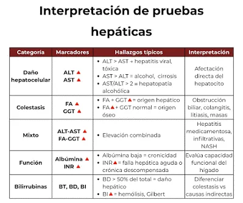

El perfil hepático, también conocido como hepatograma, es un conjunto de análisis de laboratorio realizados en una muestra de sangre que permite evaluar el funcionamiento del hígado y detectar alteraciones en las células hepáticas o en las vías biliares. Es uno de los estudios más utilizados para el diagnóstico y seguimiento de enfermedades como hepatitis viral, hígado graso, cirrosis, colestasis, obstrucción biliar, daño hepático por medicamentos y trastornos metabólicos.
Este estudio no corresponde a una sola prueba, sino a un grupo de exámenes que analizan diferentes sustancias producidas por el hígado, entre ellas las enzimas hepáticas, la bilirrubina, la albúmina y el tiempo de protrombina. La interpretación conjunta de estos resultados permite al médico determinar si existe inflamación, lesión o alteración en la función hepática.
Función
El hepatograma tiene como finalidad valorar la salud del hígado, detectar de forma temprana enfermedades hepáticas, evaluar la gravedad del daño producido y controlar la evolución del paciente durante el tratamiento. También es útil para identificar alteraciones en la producción y eliminación de la bilis, valorar la capacidad del hígado para sintetizar proteínas y monitorizar pacientes que reciben medicamentos potencialmente hepatotóxicos.
¿Qué evalúa?
El perfil hepático evalúa principalmente el estado de las células del hígado, la presencia de inflamación o necrosis hepática, el funcionamiento de las vías biliares y la capacidad del órgano para producir proteínas y eliminar sustancias de desecho. Para ello incluye pruebas como ALT, AST, GGT, fosfatasa alcalina, bilirrubina total y fraccionada, albúmina y tiempo de protrombina.
Intervenciones de enfermería
Antes
La enfermera verifica la identidad del paciente, revisa la orden médica y confirma si el examen requiere un ayuno de entre 8 y 12 horas. Además, explica el procedimiento para disminuir la ansiedad, pregunta sobre medicamentos, suplementos o consumo de alcohol que puedan modificar los resultados y prepara el material necesario para la extracción sanguínea.
Durante
Se obtiene la muestra de sangre mediante técnica aséptica, asegurando una correcta identificación del tubo de laboratorio. Durante la venopunción se vigila el estado general del paciente y se brinda apoyo si presenta ansiedad, mareo o molestias.
Después
Una vez obtenida la muestra, se comprime el sitio de punción para evitar hematomas y se envía la sangre al laboratorio en el menor tiempo posible. La enfermera registra el procedimiento realizado y comunica cualquier incidencia al equipo de salud.